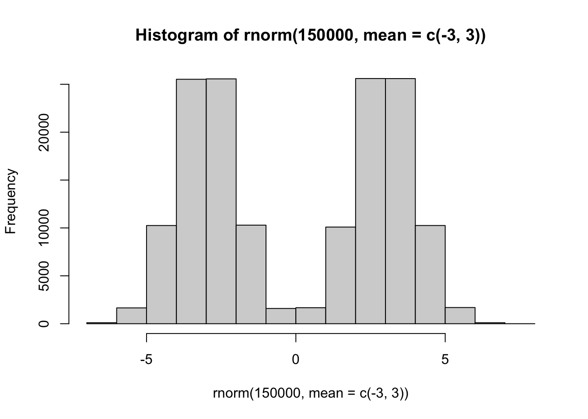
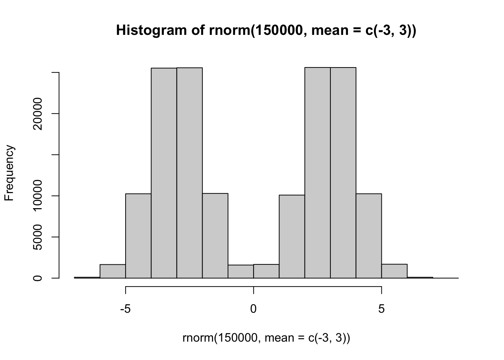
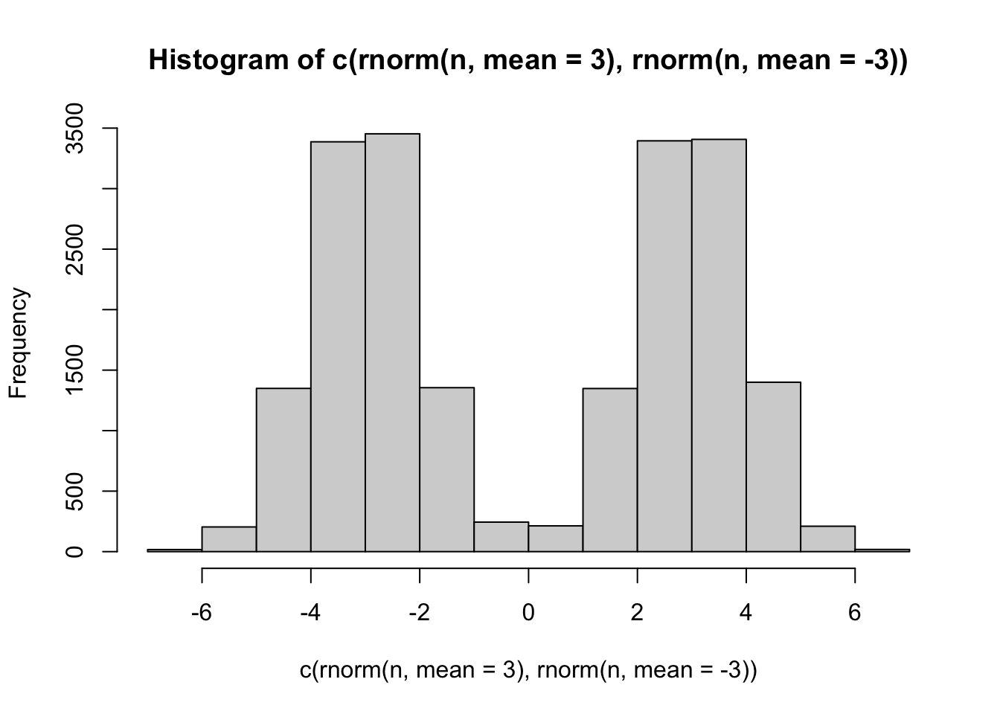
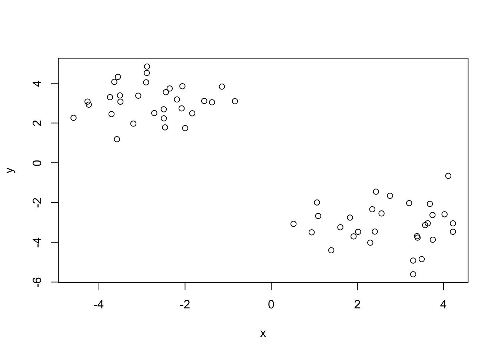
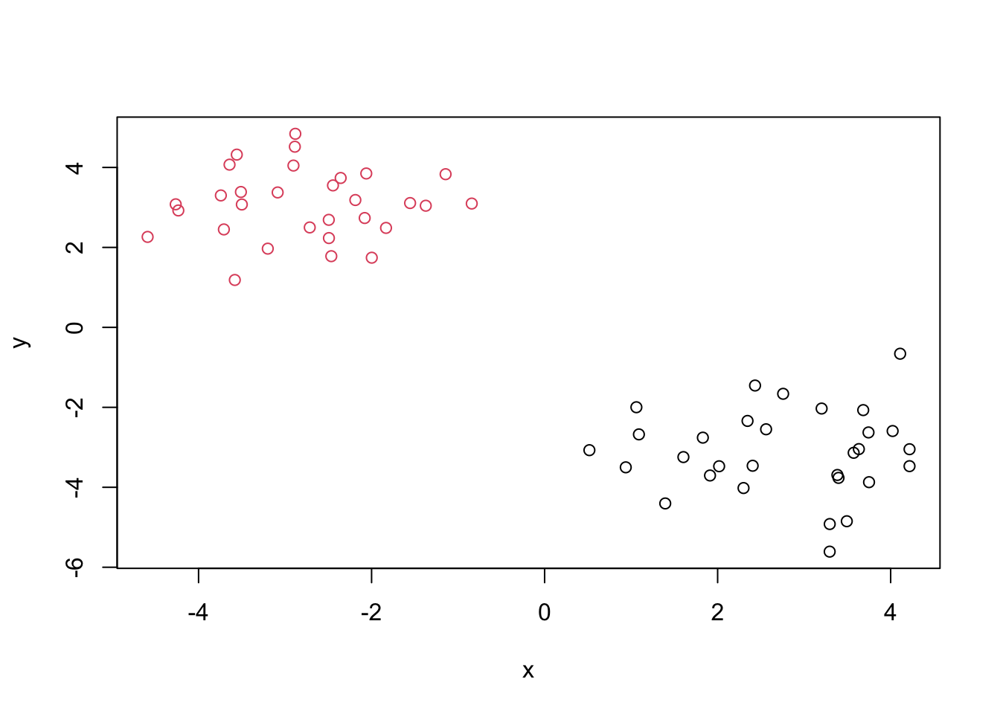
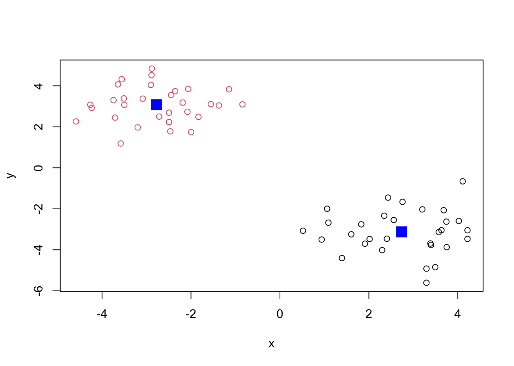
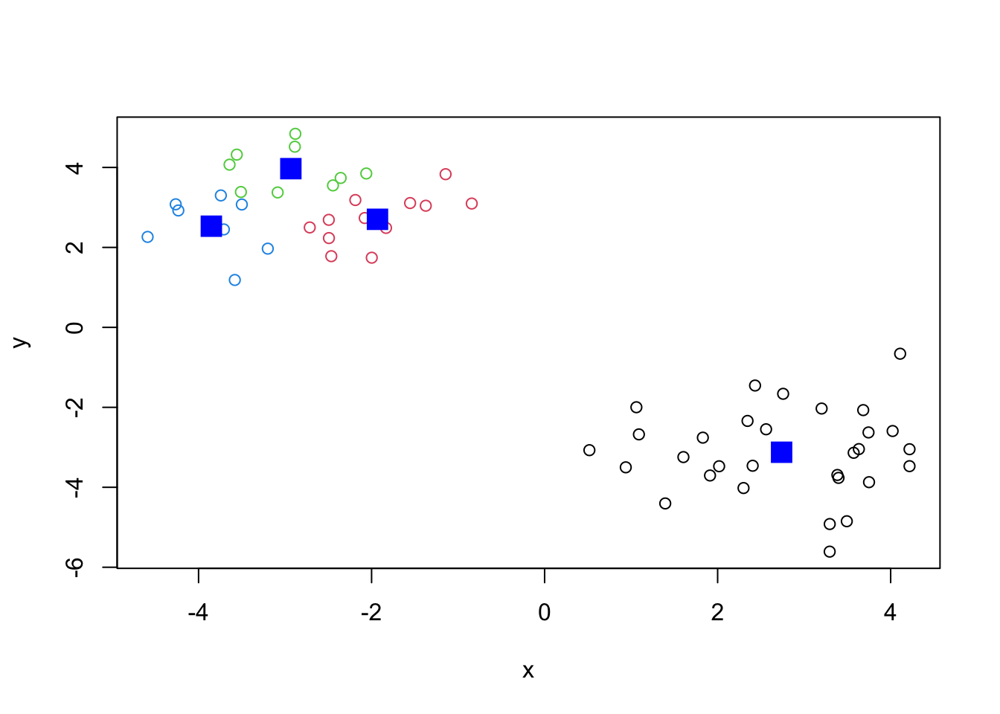
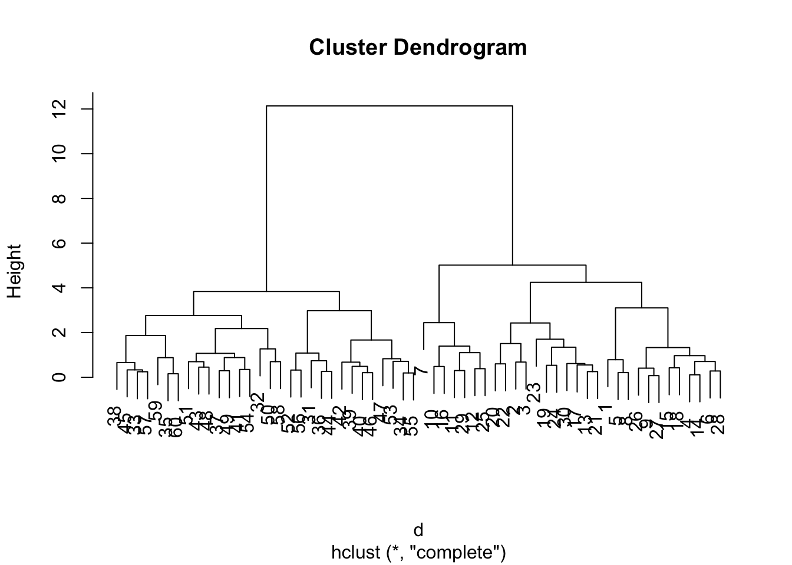
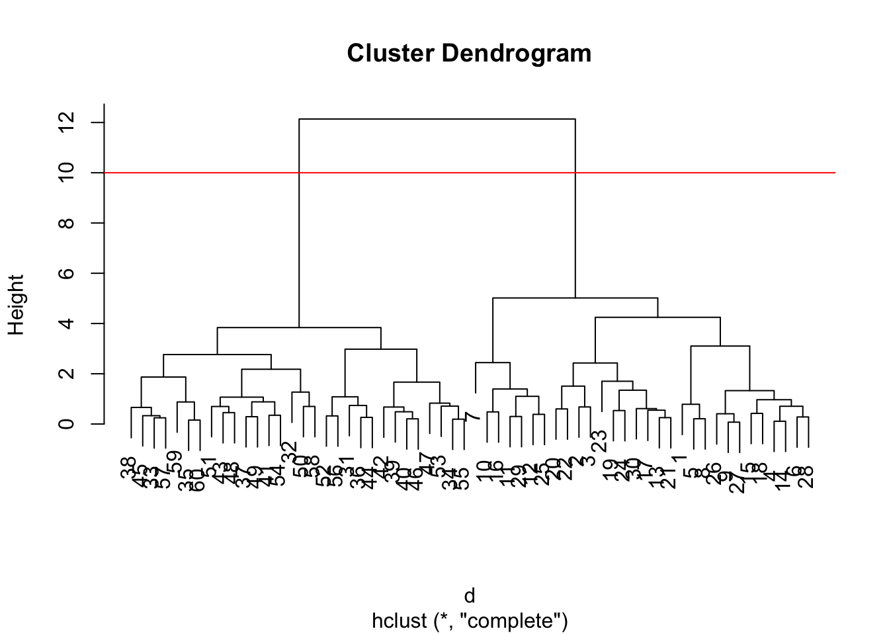
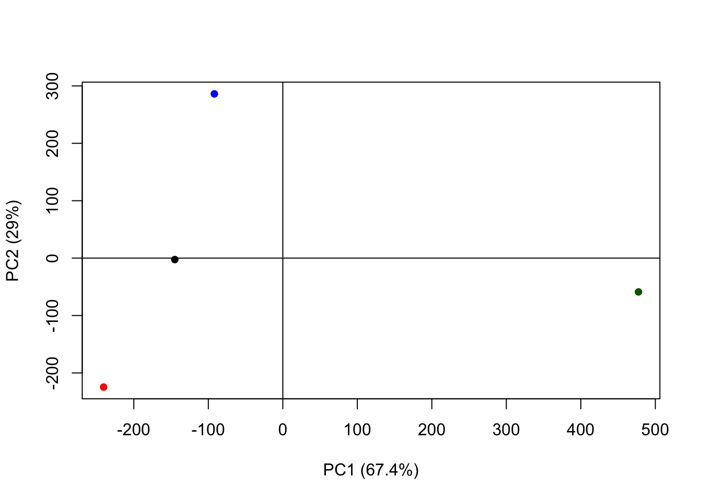

hist(rnorm(150000, mean=c(-3,3)))
Machine learning k clustering
Before we get into clustering methods, let’s make some sample data to cluster where we know what the answer should be.
To help with this I will use the rnorm() function
hist(rnorm(150000, mean=c(-3,3)))
n=10000
hist(c(rnorm(n,mean=3), rnorm(n, mean=-3)))
n=30
x<-(c(rnorm(n,mean=3), rnorm(n, mean=-3)))
#x
y<-(c(rnorm(n,mean=-3), rnorm(n, mean=3))) # rev(x)
#y
z<-cbind(x,y) # combine the vectors column bind (row bind would combine them row wise)
z x y
[1,] 3.2951960 -5.6093797
[2,] 1.0900453 -2.6767817
[3,] 1.0608407 -1.9977406
[4,] 3.6325286 -3.0445919
[5,] 3.2958430 -4.9190871
[6,] 4.0228119 -2.5925356
[7,] 4.1095470 -0.6591405
[8,] 3.4931077 -4.8491948
[9,] 3.3973664 -3.7647085
[10,] 3.2020382 -2.0302391
[11,] 2.3455905 -2.3400231
[12,] 2.7571012 -1.6615548
[13,] 2.0172645 -3.4738503
[14,] 3.5724836 -3.1372249
[15,] 4.2180504 -3.0477799
[16,] 3.6828568 -2.0695568
[17,] 2.4049515 -3.4614401
[18,] 4.2179859 -3.4713918
[19,] 1.8291159 -2.7581583
[20,] 0.5176738 -3.0714861
[21,] 1.9119622 -3.7049186
[22,] 0.9381916 -3.5007659
[23,] 1.3943490 -4.4038210
[24,] 1.6042960 -3.2443700
[25,] 2.4324770 -1.4546553
[26,] 3.7500393 -3.8719769
[27,] 3.3842440 -3.6918586
[28,] 3.7439312 -2.6278913
[29,] 2.5601033 -2.5491858
[30,] 2.2992603 -4.0189777
[31,] -2.9032600 4.0468871
[32,] -3.5808954 1.1854598
[33,] -3.5105196 3.3861928
[34,] -1.5548344 3.1094910
[35,] -4.2338075 2.9242243
[36,] -3.6419172 4.0697224
[37,] -2.4946232 2.6896399
[38,] -3.0856488 3.3748436
[39,] -2.0614021 3.8489896
[40,] -2.4463683 3.5504299
[41,] -2.0796008 2.7348085
[42,] -2.1876560 3.1850533
[43,] -2.4931141 2.2335900
[44,] -3.5579709 4.3206325
[45,] -3.4997829 3.0734084
[46,] -2.3572994 3.7365251
[47,] -1.1445272 3.8311679
[48,] -2.4656659 1.7803363
[49,] -2.7147194 2.4991852
[50,] -3.7073821 2.4494979
[51,] -1.9978474 1.7426216
[52,] -2.8816325 4.8412288
[53,] -0.8421594 3.0968612
[54,] -1.8329470 2.4876322
[55,] -1.3735809 3.0426280
[56,] -2.8870438 4.5185672
[57,] -3.7421843 3.2997307
[58,] -3.1997850 1.9689580
[59,] -4.5888328 2.2627769
[60,] -4.2640501 3.0781447plot(z)
k-means clustering
The function in base R for k-clustering is called kmeans().
km <- kmeans(z, centers=2)
#n=30 so its telling us there are 30 points in each group
# clustering vector is like a membership vector - tells us which cluster each point is closest to
kmK-means clustering with 2 clusters of sizes 30, 30
Cluster means:
x y
1 2.739375 -3.123476
2 -2.777702 3.078974
Clustering vector:
[1] 1 1 1 1 1 1 1 1 1 1 1 1 1 1 1 1 1 1 1 1 1 1 1 1 1 1 1 1 1 1 2 2 2 2 2 2 2 2
[39] 2 2 2 2 2 2 2 2 2 2 2 2 2 2 2 2 2 2 2 2 2 2
Within cluster sum of squares by cluster:
[1] 67.35488 47.79652
(between_SS / total_SS = 90.0 %)
Available components:
[1] "cluster" "centers" "totss" "withinss" "tot.withinss"
[6] "betweenss" "size" "iter" "ifault" Q: print out the cluster membership vector
km$cluster [1] 1 1 1 1 1 1 1 1 1 1 1 1 1 1 1 1 1 1 1 1 1 1 1 1 1 1 1 1 1 1 2 2 2 2 2 2 2 2
[39] 2 2 2 2 2 2 2 2 2 2 2 2 2 2 2 2 2 2 2 2 2 2Plot with clustering result
#plot(z, col= 1)
#plot(z, col= c("red", "blue"))
#plot(z, col= c(1,2))
# set color equal to the cluster membership vector:
plot(z, col= km$cluster)
plot(z, col= km$cluster)
points(km$centers, col="blue", pch=15, cex=2) # cex makes point bigger if larger than 1, pch makes it thicker
# in ggplot you have to add layers. here it just does it automatically
# always have to specify number of clustersQ: Can you cluster our data in z into four clusters please?
km4 <- kmeans(z, centers=4)
plot(z, col= km4$cluster)
points(km4$centers, col="blue", pch=15, cex=2) 
# This is stochastic so it will be different every time
# kmeans will impose a structure (clustering) on your data even if its not there because you specify how many clusters you want - self fulfilling prophicyHierarchical clustering The main function to do hierarchical clustering in base R is called hclust().
Unlike kmeans(). I can not just pass in my data as input, I first need a distance matrix (distance between each points (60x60 and zeros down the diagonal)).
d<-dist(z) # make the distance matrix
hc<- hclust(d)
hc
Call:
hclust(d = d)
Cluster method : complete
Distance : euclidean
Number of objects: 60 # bottom up - start with 60 clusters and then merge them untill we've stuck everything into one cluster - shows us the merging
# or top down clustering There is a specific hclust plot() method…
plot(hc)
plot(hc)
abline(h=10, col="red") # adds line where the cluster number shows because the distance between points is the largest
To get my clustering result (i.e., membership vector). I can “cut” my tree at a given height. To do this I will use the cutree()
grps<- cutree(hc, h=10) # this is our new vector of hierarchial clustering results
grps [1] 1 1 1 1 1 1 1 1 1 1 1 1 1 1 1 1 1 1 1 1 1 1 1 1 1 1 1 1 1 1 2 2 2 2 2 2 2 2
[39] 2 2 2 2 2 2 2 2 2 2 2 2 2 2 2 2 2 2 2 2 2 2Principle component analysis (PCA)
Principal component analysis (PCA) is a well established “multivariate statistical technique” used to reduce the dimensionality of a complex data set to a more manageable number (typically 2D or 3D). This method is particularly useful for highlighting strong paterns and relationships in large datasets (i.e. revealing major similarities and diferences) that are otherwise hard to visualize. As we will see again and again in this course PCA is often used to make all sorts of bioinformatics data easy to explore and visualize.
url <- "https://tinyurl.com/UK-foods"
x <- read.csv(url, row.names=1) # make the columns the row names with =1
dim(x)[1] 17 4#View(x) always comment it unless you are looking at it
head(x) England Wales Scotland N.Ireland
Cheese 105 103 103 66
Carcass_meat 245 227 242 267
Other_meat 685 803 750 586
Fish 147 160 122 93
Fats_and_oils 193 235 184 209
Sugars 156 175 147 139barplot(as.matrix(x), beside=T, col=rainbow(nrow(x)))
pairs(x, col=rainbow(10), pch=16)
PCA to the rescue
The main function to do PCA in base R is called prcomp().
Note thatt I need to take the transpose of this particular data as that is what the precomp() help page was asking for.
x England Wales Scotland N.Ireland
Cheese 105 103 103 66
Carcass_meat 245 227 242 267
Other_meat 685 803 750 586
Fish 147 160 122 93
Fats_and_oils 193 235 184 209
Sugars 156 175 147 139
Fresh_potatoes 720 874 566 1033
Fresh_Veg 253 265 171 143
Other_Veg 488 570 418 355
Processed_potatoes 198 203 220 187
Processed_Veg 360 365 337 334
Fresh_fruit 1102 1137 957 674
Cereals 1472 1582 1462 1494
Beverages 57 73 53 47
Soft_drinks 1374 1256 1572 1506
Alcoholic_drinks 375 475 458 135
Confectionery 54 64 62 41# want to switch colummns and rowes so its accepted into PCA
t(x) # transpose Cheese Carcass_meat Other_meat Fish Fats_and_oils Sugars
England 105 245 685 147 193 156
Wales 103 227 803 160 235 175
Scotland 103 242 750 122 184 147
N.Ireland 66 267 586 93 209 139
Fresh_potatoes Fresh_Veg Other_Veg Processed_potatoes
England 720 253 488 198
Wales 874 265 570 203
Scotland 566 171 418 220
N.Ireland 1033 143 355 187
Processed_Veg Fresh_fruit Cereals Beverages Soft_drinks
England 360 1102 1472 57 1374
Wales 365 1137 1582 73 1256
Scotland 337 957 1462 53 1572
N.Ireland 334 674 1494 47 1506
Alcoholic_drinks Confectionery
England 375 54
Wales 475 64
Scotland 458 62
N.Ireland 135 41pca<- prcomp(t(x))
summary(pca) # pc1 captures 67% of the variation in the data. pc2 captures 29% of the dataImportance of components:
PC1 PC2 PC3 PC4
Standard deviation 324.1502 212.7478 73.87622 2.921e-14
Proportion of Variance 0.6744 0.2905 0.03503 0.000e+00
Cumulative Proportion 0.6744 0.9650 1.00000 1.000e+00# (67+29=96, therefore, )96% of the varience was captured in 2 dimensionsLets see what is inside our result object pca that we just calculated:
attributes(pca)$names
[1] "sdev" "rotation" "center" "scale" "x"
$class
[1] "prcomp"pca$x PC1 PC2 PC3 PC4
England -144.99315 -2.532999 105.768945 -9.152022e-15
Wales -240.52915 -224.646925 -56.475555 5.560040e-13
Scotland -91.86934 286.081786 -44.415495 -6.638419e-13
N.Ireland 477.39164 -58.901862 -4.877895 1.329771e-13To make our main result figure, called a “PC plot” (or “score plot” or “coordination plot” or “PC1 vs PC2 plot”).
plot(pca$x[,1], pca$x[,2], col=c("black", "red", "blue", "darkgreen"), pch=16, xlab="PC1 (67.4%)", ylab="PC2 (29%)") # get the first column and the second column and plot the first column against the second (pca1 vs pca2)
# pch fills in the dots
abline(h=0) # average
abline(v=0)
From here we can see that Ireland is off on it’s own. The major axis of variance. Give more weight to PC1 because it captures more of the variance. If two points are far apart on PC1 then thats saying there is a major feature in this data. ireland is the main difference.
Variable loadings plot
Can give us insight on how the original variables (the foods) contribute to our new PC axis
## Lets focus on PC1 as it accounts for > 90% of variance
par(mar=c(10, 3, 0.35, 0))
barplot( pca$rotation[,1], las=2 )
# PC1 -> COMPARING TWO COUNTRIESpca$rotationsNULL